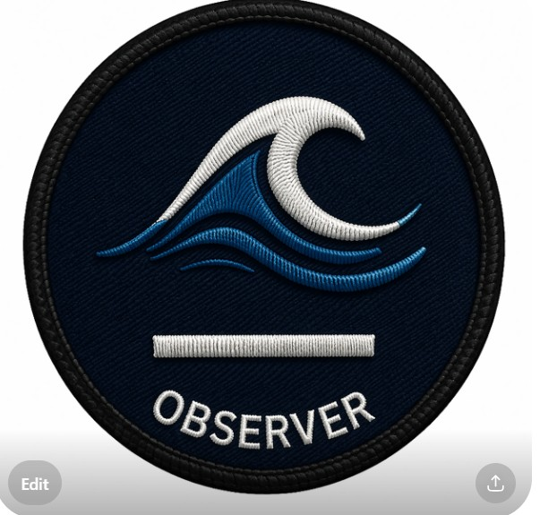
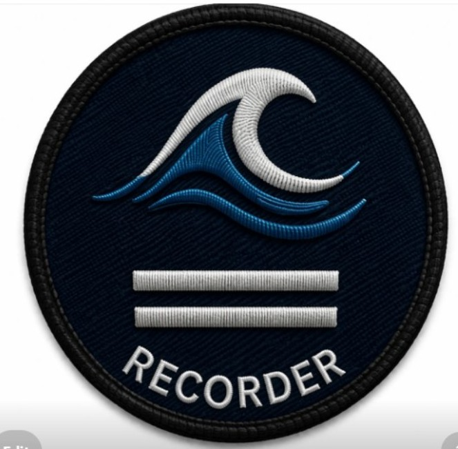
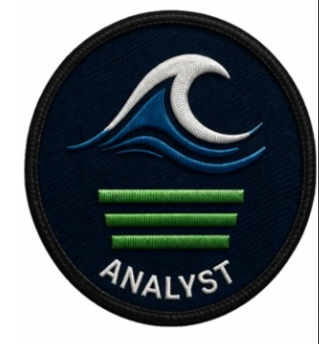
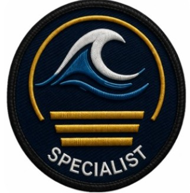
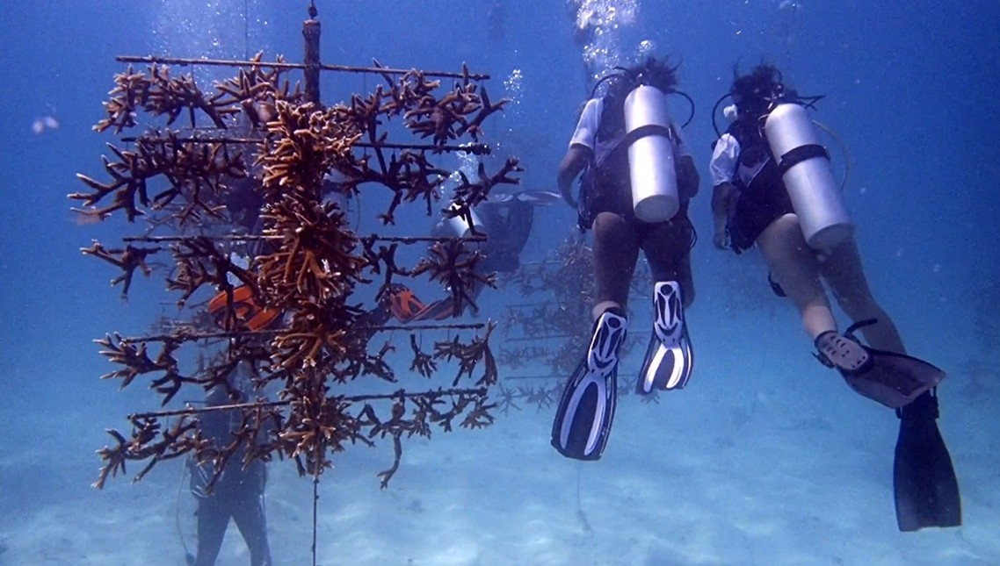
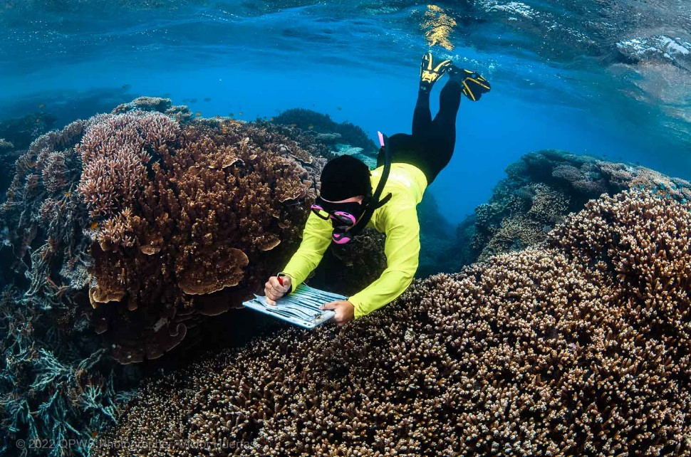
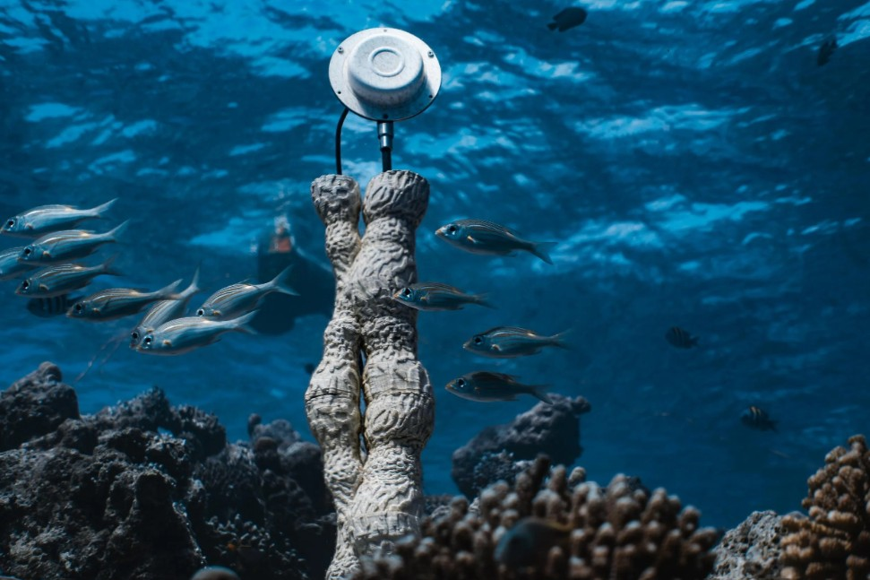
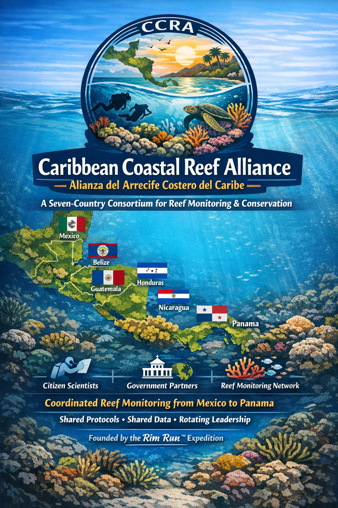
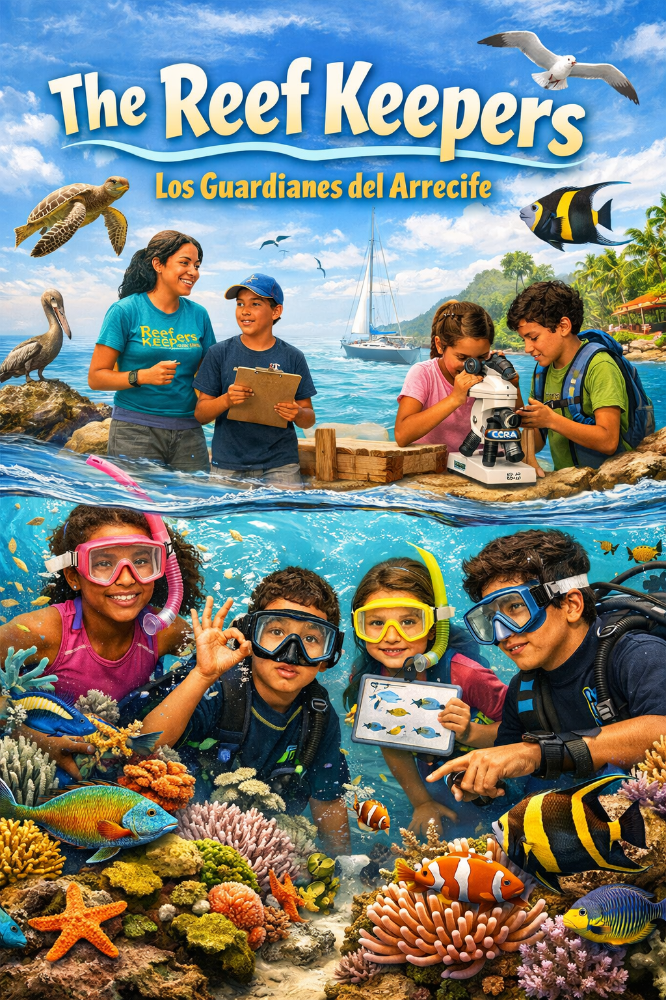
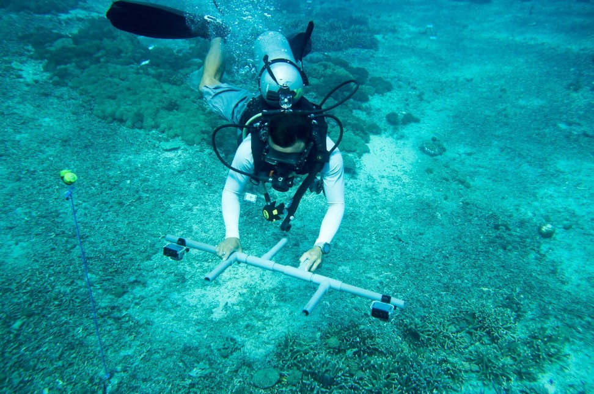

Trained local observers. Standardized field protocols. A living reef record built one country at a time — by the people who live closest to the water, for as many years as it takes.
Observadores locales capacitados. Protocolos de campo estandarizados. Un registro vivo del arrecife construido un país a la vez — por las personas que viven más cerca del agua, durante todos los años que sean necesarios.
The Rim Run™ Citizen Science Network connects trained local observers with a standardized field system to monitor reef conditions across seven countries. The goal is not a snapshot — it is a longitudinal record, built year after year by the people who live on these coastlines, that grows more scientifically valuable and more politically powerful with every passing season.
This is not extraction. The data belongs first to the communities who generate it. The training, the tools, and the international visibility that comes with participation are given back to every country the expedition enters — because the health of these reefs ultimately depends on the people who live beside them understanding their value and having the means to protect it.
No outside organization has committed to this coastline, these communities, and this methodology with the consistency this work demands. The Rim Run™ does. Every year. The same loop. The same protocols. The same respect.
La Red de Ciencia Ciudadana Rim Run™ conecta a observadores locales capacitados con un sistema de campo estandarizado para monitorear las condiciones de los arrecifes en siete países. El objetivo no es una instantánea — es un registro longitudinal, construido año tras año por las personas que viven en estas costas, que se vuelve más valioso científicamente y más poderoso políticamente con cada temporada que pasa.
Esto no es extracción. Los datos pertenecen primero a las comunidades que los generan. La capacitación, las herramientas y la visibilidad internacional que conlleva la participación se devuelven a cada país que la expedición visita — porque la salud de estos arrecifes depende en última instancia de que las personas que viven junto a ellos comprendan su valor y tengan los medios para protegerlos.
Ninguna organización externa se ha comprometido con esta costa, estas comunidades y esta metodología con la consistencia que este trabajo exige. El Rim Run™ lo hace. Cada año. El mismo recorrido. Los mismos protocolos. El mismo respeto.
This network is built to establish trained, locally anchored observers in every participating country — people who know their reef, know their community, and carry the data forward long after the expedition has moved on. The goal is not a network of data collectors. It is a network of reef stewards who own their site, understand its significance, and have the scientific credibility to advocate for its protection.
Esta red está diseñada para establecer observadores capacitados y anclados localmente en cada país participante — personas que conocen su arrecife, conocen su comunidad y llevan los datos adelante mucho después de que la expedición haya partido. El objetivo no es una red de recolectores de datos. Es una red de guardianes del arrecife que son dueños de su sitio, comprenden su importancia y tienen la credibilidad científica para abogar por su protección.
Coordination with national marine authorities, fisheries departments, and protected area managers in each country ensures access, permitting, and the institutional legitimacy that makes long-term monitoring possible. These relationships are built on mutual respect — not convenience.
La coordinación con las autoridades marinas nacionales, los departamentos de pesca y los administradores de áreas protegidas en cada país garantiza el acceso, los permisos y la legitimidad institucional que hace posible el monitoreo a largo plazo.
Protocols align with Reef Check, AGRRA, and Healthy Reefs Initiative standards — ensuring data integrates with the wider Caribbean monitoring record and can be used by selected scientific institutions and conservation organizations worldwide.
Los protocolos se alinean con los estándares de Reef Check, AGRRA e Healthy Reefs Initiative — garantizando que los datos se integren con el registro de monitoreo más amplio del Caribe.
Locally recruited and trained divers, fishers, and coastal community members who maintain site-level monitoring between annual expedition visits. Their ecological knowledge — often generations deep — is treated as the scientific asset it is.
Buceadores, pescadores y miembros de comunidades costeras reclutados y capacitados localmente que mantienen el monitoreo a nivel de sitio entre las visitas anuales de la expedición.
Standardized field training delivered in-country during each circuit — hands-on, protocol-driven, and designed for retention by people who work the water for a living. Not designed for classrooms. Designed for reefs.
Capacitación de campo estandarizada impartida en cada país durante cada circuito — práctica, basada en protocolos y diseñada para ser retenida por personas que trabajan el agua para vivir.
Belt transects, point-intercept surveys, fish counts, water conditions, and photographic documentation — consistent methodology across all seven countries, executed with the discipline of someone trained in environments where there is no margin for sloppy data.
Transectos de banda, censos de intercepto de puntos, conteos de peces, condiciones del agua y documentación fotográfica — metodología consistente en los siete países.
Trained observers conduct rapid post-storm assessments at their home sites — building the first systematic storm-impact record for this coastline and giving local communities the data they need to advocate for recovery resources.
Los observadores capacitados realizan evaluaciones rápidas posteriores a tormentas en sus sitios de origen — construyendo el primer registro sistemático del impacto de tormentas para esta costa.
Each annual circuit includes observer calibration sessions — ensuring data quality, methodological consistency, and the kind of personal reconnection that keeps a long-term network alive and motivated.
Cada circuito anual incluye sesiones de calibración de observadores — garantizando la calidad de los datos, la consistencia metodológica y el tipo de reconexión personal que mantiene viva y motivada a una red a largo plazo.
Twenty years of standardized observations along this arc would constitute one of the most significant community-based reef records ever assembled — and a body of evidence powerful enough to change policy. That is the actual goal.
Veinte años de observaciones estandarizadas a lo largo de este arco constituirían uno de los registros de arrecifes basados en la comunidad más significativos jamás reunidos — y un cuerpo de evidencia lo suficientemente poderoso como para cambiar políticas.
The network is built on a four-level certification progression. Level 1 is the entry point — where every observer begins. Level 4 is the top of the ladder. Each level represents earned competency: specific skills, specific survey authority, and specific responsibilities within the network. You advance when you are ready. The data standard does not change. Only what you are qualified to collect.




Every observer in this network starts at Level 1. Advancement is earned through demonstrated field competency, not time served or credentials held elsewhere. A commercial fisherman who has worked the same reef for twenty years starts at Level 1 — and may reach Level 4 faster than anyone. The standard is what you can do in the water, not what is written on a certificate from somewhere else.
Todo observador en esta red comienza en el Nivel 1. El avance se gana a través de competencia demostrada en campo, no por tiempo acumulado ni por credenciales obtenidas en otro lugar. Un pescador comercial que ha trabajado el mismo arrecife durante veinte años comienza en el Nivel 1 — y puede alcanzar el Nivel 4 más rápido que cualquiera. El estándar es lo que puedes hacer en el agua, no lo que dice un certificado de otro lugar.
Each field immersion session produces documented observations, trained participants, and measurable public visibility for the communities involved. Participants work alongside the expedition science team in a controlled field environment — real protocols, real data, real standards. The experience is demanding by design. What you leave with is worth the difficulty.
Cada sesión de inmersión en campo produce observaciones documentadas, participantes capacitados y visibilidad pública medible para las comunidades involucradas. Los participantes trabajan junto al equipo científico de la expedición en un entorno de campo controlado — protocolos reales, datos reales, estándares reales.



This is a controlled field environment. Entry is earned. Standards are non-negotiable. What participants leave with — observation skill, protocol discipline, and ownership of their site — is the entire point.
Este es un entorno de campo controlado. La entrada se gana. Los estándares no son negociables. Lo que los participantes se llevan — habilidad de observación, disciplina de protocolo y propiedad de su sitio — es todo el propósito.
Limited cohorts per session. Pre-brief, in-water protocol, and post-dive data entry — every time, without exception. The discipline is the training.
Cohortes limitadas por sesión. Reunión previa, protocolo en el agua y registro de datos post-buceo — cada vez, sin excepción. La disciplina es la capacitación.
Skills are built in the water, at depth, on actual reef survey stations — not in a classroom. The reef is the classroom.
Las habilidades se desarrollan en el agua, a profundidad, en estaciones reales de monitoreo de arrecifes — no en un aula. El arrecife es el aula.
The data is only as good as the method. Observers learn why consistency matters before they learn the technique. Sloppy data is worse than no data.
Los datos son tan buenos como el método. Los observadores aprenden por qué la consistencia importa antes de aprender la técnica.
Trained observers own their site data. The network supports them — it does not extract from them. Their reef. Their data. Their voice to the world.
Los observadores capacitados son dueños de los datos de su sitio. La red los apoya — no les extrae. Su arrecife. Sus datos. Su voz ante el mundo.
The expedition vessel is a functional science platform. Participation means working alongside a professional operation on a real mission — not a simulated one.
El barco de la expedición es una plataforma científica funcional. Participar significa trabajar junto a una operación profesional en una misión real — no simulada.
Field cohorts are intentionally small. Quality of training over quantity of participants — every time. This is not a tour. There are no spectators.
Las cohortes de campo son intencionalmente pequeñas. Calidad de la capacitación sobre cantidad de participantes — siempre.
Session documentation — photos, data summaries, observer profiles — is published to extend the network's reach and bring international attention to the communities and coastlines involved.
La documentación de las sesiones — fotos, resúmenes de datos, perfiles de observadores — se publica para ampliar el alcance de la red.
The goal is a trained, locally credentialed observer at every major reef site on the circuit within five years — people who can speak for their reef with data, authority, and the backing of an international network.
El objetivo es tener un observador capacitado y acreditado localmente en cada sitio de arrecife importante del circuito en cinco años.

The Caribbean Coastal Reef Alliance — CCRA — is a seven-country cross-border consortium born from the Rim Run™ expedition and designed to outlast it. Its purpose is coordinated reef monitoring across the full Western Caribbean coastal arc, executed by locally trained observers operating under shared standards, sharing data across borders, and speaking with a unified scientific voice.
The CCRA operates on the principle of equal national partnership. No country leads permanently. Leadership rotates among member nations on a structured cycle — ensuring that every government has ownership of the alliance, every community has standing within it, and the program cannot be captured by any single national interest. The data belongs to all. The mission belongs to all.
What begins as a monitoring network becomes, over time, something more significant: a permanent regional institution with the credibility to influence marine policy, advocate for reef protection, and provide governments with the scientific record they need to act. The CCRA is not a project. It is a structure built to last.
Mexico, Belize, Guatemala, Honduras, Nicaragua, Costa Rica, and Panama — each a full member with equal standing, equal voice, and equal claim to the data the alliance produces.
México, Belice, Guatemala, Honduras, Nicaragua, Costa Rica y Panamá — cada uno como miembro pleno con igual representación, igual voz e igual derecho sobre los datos que produce la alianza.
The alliance presidency rotates among member nations on a structured cycle. No country leads permanently. Every government has ownership. Every community has standing.
La presidencia de la alianza rota entre los países miembros en un ciclo estructurado. Ningún país lidera permanentemente.
All reef monitoring data collected across the seven-country arc is shared across the alliance in a structured, controlled-access format — building a regional record no single country could produce alone.
Todos los datos de monitoreo de arrecifes recopilados a lo largo del arco de siete países se comparten en toda la alianza en un formato estructurado de acceso controlado.
Shared protocols, shared training, shared methodology — ensuring that data collected in Panama can be directly compared with data collected in Mexico, and that the full arc tells one coherent story.
Protocolos compartidos, capacitación compartida, metodología compartida — garantizando que los datos recopilados en Panamá puedan compararse directamente con los recopilados en México.
A seven-nation alliance speaking from a shared scientific record carries weight that no single organization can match. The CCRA is designed to be the reef's advocate at the regional and international level.
Una alianza de siete naciones que habla desde un registro científico compartido tiene un peso que ninguna organización individual puede igualar.
The Rim Run™ expedition founded the CCRA and coordinates its early years. The alliance is structured to operate independently — growing stronger as member nations take increasing ownership of the mission.
La expedición Rim Run™ fundó la CCRA y coordina sus primeros años. La alianza está estructurada para operar de forma independiente.
La Alianza del Arrecife Costero del Caribe — CCRA — es un consorcio transfronterizo de siete países nacido de la expedición Rim Run™ y diseñado para sobrevivirla. Su propósito es el monitoreo coordinado de arrecifes a lo largo del arco costero completo del Caribe Occidental, ejecutado por observadores capacitados localmente que operan bajo estándares compartidos, comparten datos a través de fronteras y hablan con una voz científica unificada.
La CCRA opera bajo el principio de asociación nacional igualitaria. Ningún país lidera de forma permanente. El liderazgo rota entre los países miembros en un ciclo estructurado. Los datos pertenecen a todos. La misión pertenece a todos.
Lo que comienza como una red de monitoreo se convierte, con el tiempo, en algo más significativo: una institución regional permanente con la credibilidad para influir en las políticas marinas, abogar por la protección de los arrecifes y proporcionar a los gobiernos el registro científico que necesitan para actuar. La CCRA no es un proyecto. Es una estructura construida para durar.

The Reef Keepers is the youth education program of the Rim Run™ Citizen Science Network — designed to introduce children and young people of all school ages to oceanography, reef ecology, and the science of the coastlines they live beside. A child who learns to read a reef at ten years old may spend the next sixty years protecting it. That is the investment this program makes.
The program operates in two environments: the classroom and the field. In the classroom, local educators deliver standardized curriculum covering reef ecology, ocean science, water quality, and the connection between healthy reefs and healthy communities. In the field, young participants experience the reef directly — snorkeling alongside trained observers, learning to identify species, and recording what they see.
The Reef Keepers program is coordinated through the CCRA in each member country — giving it government backing, school system access, and the institutional legitimacy to operate at scale. Every child who completes the program receives a Reef Keepers certification, joining a growing community of young reef stewards across seven nations who share a coastline, a mission, and a future.
Curriculum and field activities designed for all school ages — from early reef ecology introduction to structured field observation and data recording for older students.
El currículo y las actividades de campo están diseñados para todas las edades escolares.
Standardized reef science curriculum for local educators — covering oceanography, coral biology, water quality, ecosystem interdependence, and the human relationship with coastal systems.
Currículo estandarizado de ciencias del arrecife desarrollado para educadores locales.
Direct in-water reef experience alongside trained adult observers — species identification, coral health assessment, and structured observation that transforms abstract science into lived understanding.
Experiencia directa en el agua junto al arrecife con observadores adultos capacitados.
The Reef Keepers program operates through the CCRA in each member country — with government backing, school system access, and institutional legitimacy that allows it to operate at national scale.
El programa Reef Keepers opera a través de la CCRA en cada país miembro.
Every participant who completes the program receives a Reef Keepers certification — joining a growing community of young reef stewards across seven nations.
Cada participante que completa el programa recibe una certificación Reef Keepers.
Young Reef Keepers grow up to become CCRA observers. The same reefs. The same coastlines. A continuous generational pipeline from classroom to field scientist — built one child at a time.
Los jóvenes Reef Keepers crecen para convertirse en observadores de la CCRA.
Los Guardianes del Arrecife es el programa de educación juvenil de la Red de Ciencia Ciudadana Rim Run™ — diseñado para introducir a niños y jóvenes de todas las edades escolares a la oceanografía, la ecología de arrecifes y la ciencia de las costas junto a las que viven.
The network's long-term value lives in the observers who return to their sites year after year — logging what has changed, what has recovered, and what is still under threat. These are not tourists. They are not volunteers performing a task someone else designed. They are the record. They are the stewards. They are the reason this works.
El valor a largo plazo de la red reside en los observadores que regresan a sus sitios año tras año — registrando qué ha cambiado, qué se ha recuperado y qué sigue bajo amenaza.

Whether you are a scientist, a government agency, a coastal community leader, a fisher who has been reading this reef for thirty years, or a diver who wants to do more than look — the Rim Run™ Citizen Science Network wants to hear from you. The water does not care about your title. It cares about your commitment.
Ya sea que seas científico, una agencia gubernamental, un líder de comunidad costera, un pescador que ha leído este arrecife durante treinta años, o un buceador que quiere hacer algo más que observar — la Red de Ciencia Ciudadana Rim Run™ quiere saber de ti.
nevadoraiders@gmail.com